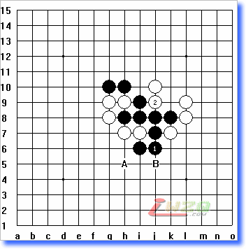
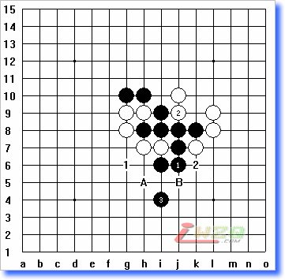

冲杀与做杀
#1 冲杀与做杀作者：有志青年 发表时间：2008-4-8 7:53:59
这是昨天晚上的一个实战对局谱，当黑走出如下棋型的时候，黑应该如何杀？

对于初级选手来说，通常情况下，比较喜欢的是直接冲杀，但有时候采用冲杀是根本无法胜出的，但要是变通一下，则形势就大不一样了。如上图所示：白2后黑三如果直接采用冲的方式，无论是连冲还是跳冲都没有胜算，这里就需要变通一下，采用做杀的方式，也就是“做棋取胜”。
先看上边的图形，黑可以借助的两个冲4点为A、B两点，当然黑也可以采用跳冲到G4或J4，只是跳冲无意义所以不讨论，这里只讨论A、B两点的利用。
如果黑采用下图的方式做棋，则大不一样了，本来一盘通过连冲无法取胜的棋，瞬间之内就可以做出一个双杀来：

黑3做杀！留下A、B两点不走而借，这样就在1、2两处均形成了下一手的四三杀！
这样无论白是应A或B都必须会剩余其中一个点出来给黑走，所以形成了双杀点在A、B。
提示：
1、做棋是一种阶段性的的标志，由连冲到做棋，是一个棋手阶段性提高的标志；
2、双示点的选择同样是一个初学者阶段性进步的标志，当你能找到双杀点的时候，说明你在以前的基础上有了明显的提高，步入了一个新的台阶。
#2 Re:冲杀与做杀作者：先期 发表时间：2008-6-13 23:35:17
我认为这是一子三杀，黑棋的两个跳冲点G4和J4与黑3是第三个杀，不然白棋走K6点1、2处的双杀就被防住了。#3 Re:Re:冲杀与做杀作者：百医天使 发表时间：2008-6-14 7:17:28
引用：我想是第一步叫叫杀,然后是不论白怎么防,黑都可以做出一子双杀.
原文由 先期 发表于 2008-6-13 23:35:17 :
我认为这是一子三杀，黑棋的两个跳冲点G4和J4与黑3是第三个杀，不然白棋走K6点1、2处的双杀就被防住了。
#4 Re:冲杀与做杀作者：紫川然 发表时间：2008-7-8 13:50:49
我也认为这是三杀!
#5 Re:冲杀与做杀作者：五子冰 发表时间：2008-7-8 19:29:38
黑3:f6好象也有赢.
#6 Re:冲杀与做杀作者：五子冰 发表时间：2008-7-8 19:48:32
黑3:f6,g6,g5,h5,d8,e7,g7,e5,f10,杀.#7 Re:冲杀与做杀作者：战 发表时间：2008-7-11 20:36:00
在无黑3的情况下，如果是黑子先走，那么白子必输，因为白子无法连4.#8 Re:冲杀与做杀作者：来客沙丝 发表时间：2009-3-16 20:38:29
“这样就在1、2两处均形成了下一手的四三杀！”为什么？“四”在哪里呀？1或是2，为什么不是三三禁手呢？

#9 Re:Re:冲杀与做杀作者：一代天骄 发表时间：2009-5-17 9:44:07
白子没有禁手的#10 Re:冲杀与做杀作者：獨找我愛 发表时间：2009-5-17 14:29:45
学习学习啦，我这新手绝对没想到！#11 Re:冲杀与做杀作者：靠 发表时间：2009-5-23 21:44:47
woligaoshouhaoyuana!!#12 Re:冲杀与做杀作者：解放者 发表时间：2009-5-29 22:17:00
我想我应该注意去总结算出这类妙点的思维过程。要不说我还真不能一时就算出i4这个点呢。
目前得到的认识是：杀线的交点。假如某个棋形再摆几子以后可以成某几种杀法，倘若几种进攻的线都经过某一点，那么这点就是胜点或好点。
#13 Re:冲杀与做杀作者：爽灵 发表时间：2009-6-12 12:25:56
I5做杀 也可必胜#14 Re:冲杀与做杀作者：注册初学者 发表时间：2009-6-24 13:22:29
学习学习啦， 我这新手绝对没想到！
我这新手绝对没想到！#15 Re:冲杀与做杀作者：亦可 发表时间：2009-7-25 20:44:53
妙手啊
不过要想出黑3妙手非一日之寒
#16 Re:冲杀与做杀作者：寻常 发表时间：2009-7-29 12:00:41
学习了
#17 Re:Re:冲杀与做杀作者：钱振鹏 发表时间：2010-1-20 23:32:27
i5跳冲#18 Re:冲杀与做杀作者：杨俊宝 发表时间：2010-2-5 14:04:30
如我白子下F7呢？#19 Re:冲杀与做杀作者：杨俊宝 发表时间：2010-2-5 14:14:00
高手!受教！